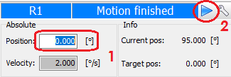
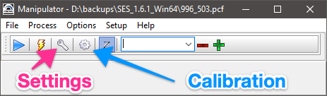
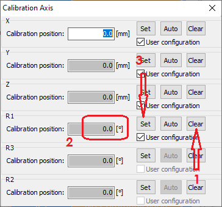
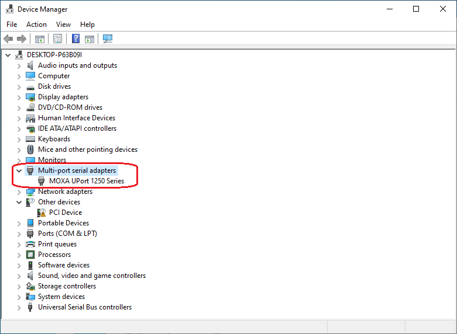
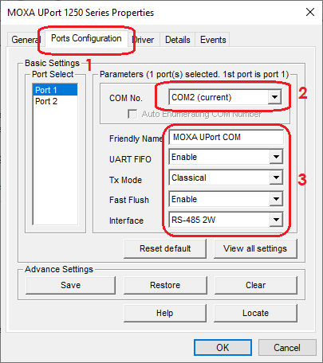
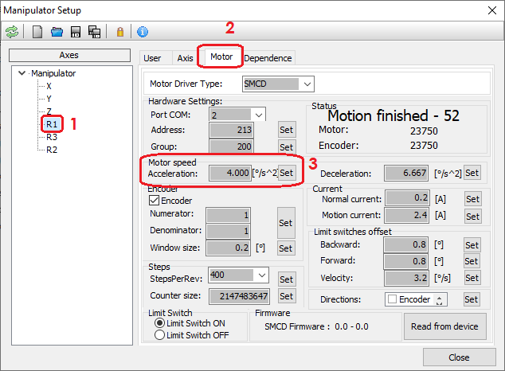

Reference positions
-
Sample transfer position:
X = 17.20 mm
Z = 43.7 cm
θ = 95°
-
Rotate the manipulator from transfer to measurement position (θ : 95° → 2°) in the preparation chamber. Set the XY stage more or less at the center.
X = 15 mm
Y = 14 mm
Z = 40 cm
-
To the manipulator to pass through the neck of analysis chamber (Z : 40 cm → 12 cm):
X = 18 mm
Y = 8 mm
-
Manipulator movement in front of analyzer (Z < 12 cm): X = 18 mm
Y = 16 mm
-
Measurement position (depending on the sample/substrate thickness): X = 12 mm
Y = 16 mm
Z = 1.675 cm
Manipulator operation
Always double check the x- and y-positions before moving the manipular z-position and rotations. In order to move the manipulator, input the absolute position, press enter, and once ready click the play button. Always watch inside the chamber when manipulator is moving.

Re-calibration
If the manipulator position is known, one can set it from the settings:

You can also access settings and calibration from the Setup menu.

Reinstallation of manipulator software/driver
- Install Microsoft .NET framework 3.5
- Install MOXA serial to USB adapter UPort 1250 driver. You can download the drivers from MOXA website. If you have problem finding the driver in the official website, you may try this.
- Once the driver is installed and instruments are plugged in, the device should appear in Windows Device Manager.

4. Set the correct port settings:

5. Download and unzip the manipulator program. Note that the
settings are specific to our system.
Troubleshooting
- If there are communication issues, make sure the COM port in Device manager and manipulator settings are same.

2. Often after power down or reconnecting the cables, the motor may give error
due to high acceleration. In that case, reduce the motor speed (2°/s^2):

3. You can save/reload manipulator settings to/from a file (look for the
respective icons in the top bar in the setup window).